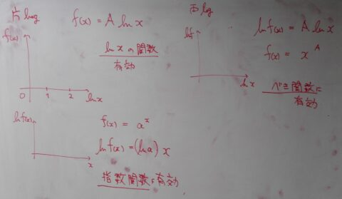

[cheat sheet] log plot
Definition: $f(x) = A \ln{x}$, where $A$ is a constant and $x > 0$.
Properties:
- $\ln x = \log_{e}{x}$ (natural logarithm, base $e$)
- $f(x) = a^x \Leftrightarrow \ln f(x) = (\ln a) x$
- $\ln 1 = 0$
- $\ln e = 1$
Transformations:
- Vertical shift: $f(x) + B$ shifts the graph up by $B$ units.
- Horizontal scaling: $\frac{1}{A} \ln x$ compresses the graph horizontally by a factor of $A$.
Asymptote:
- Vertical asymptote: $x = 0$
- Domain: $x > 0$ Range: All real numbers
